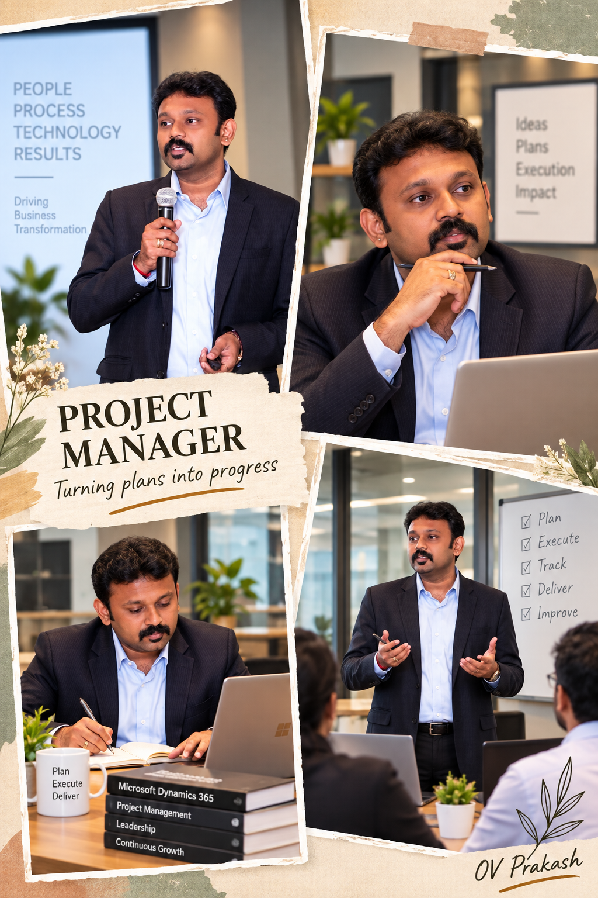

01FLAGSHIP EXPERTISE
Dynamics 365 Project Operations
End-to-end expertise across the project lifecycle — connecting project planning, resources, time, cost, contracts, billing and financial outcomes.
ABOUT
I work where business transformation, enterprise applications and program execution meet.

I’m OV Prakash, a Delivery & Practice Leader focused on Microsoft Dynamics 365, Power Platform, ERP transformation and AI-enabled delivery.
Across enterprise programs, I bring together business stakeholders, delivery teams, architects and leadership to create a common operating rhythm—from scope and governance through build, migration, testing, cutover, go-live and hypercare.
My experience spans implementation leadership, PMO governance, stakeholder management, resource planning, presales and commercial support, multi-business-unit rollouts, data migration, quality governance and delivery stabilization.
My domain expertise spans Project Operations, Finance & Operations, supply chain, procurement, manufacturing, warehousing, logistics and enterprise project delivery, supported by hands-on experience translating complex business processes into practical Microsoft Dynamics 365 solutions.
I am especially interested in using AI and automation to remove repetitive project-management work, improve decision visibility and help delivery teams spend more time on judgment, risk management and stakeholder outcomes.
I also write and share practical perspectives on Dynamics 365, Power Platform, ERP governance, AI-driven project management, implementation quality and delivery leadership.
DOMAIN EXPERTISE
My Microsoft Dynamics 365 work is grounded in practical business-process knowledge across Project Operations, supply chain, manufacturing, warehousing, logistics and enterprise delivery.
I focus on connecting business requirements with scalable Microsoft solutions — from process design and implementation through UAT, deployment, go-live and continuous improvement.
End-to-end expertise across the project lifecycle — connecting project planning, resources, time, cost, contracts, billing and financial outcomes.
Business-process expertise spanning procurement, strategic sourcing, supplier management, material planning and inventory optimization.
Connecting production requirements with forecasting, material, capacity and enterprise planning processes.
Practical understanding of warehouse and logistics operations from inbound receipt through storage, fulfilment and transportation.
Leadership of complex ERP and business-application programs involving multiple stakeholders, vendors, business units and workstreams.
Applying structured process-improvement and quality-management principles to enterprise transformation and operational excellence.
Bridging business needs, solution strategy, delivery feasibility and commercial decision-making across enterprise transformation programs.
Extending Microsoft business applications using low-code automation, data services and AI-enabled enterprise workflows.
Automotive · Manufacturing · Telecom · Engineering Services · Bearings · E-commerce · FMCG · Construction · Logistics · Warehousing · Professional Services
EMEA · APAC · UK · USA
HOW I WORK
Leadership reporting should surface decisions, risks, dependencies and ownership—not just activity.
A technically correct solution is not enough; process fit, readiness and ownership determine real success.
Good controls create clarity and traceability while keeping teams moving.